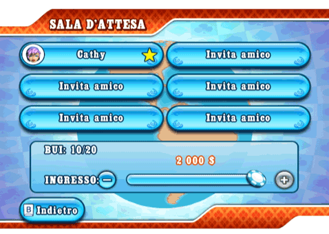

22 |
Chat in gioco e inviti |
 |
Durante una partita online, potrai scegliere tra un elenco di messaggi predefiniti da inviare via chat per bluffare, punzecchiare o fare i complimenti agli avversari. Per accedere al menu della chat, seleziona l’icona Fumetto nell’angolo in basso a destra dello schermo. Se desideri non ricevere messaggi della chat, puoi disattivare la relativa opzione dalla sezione "Opzioni" del menu di pausa.  Selezionando l'icona Fumetto accederai anche al menu "Invita gli amici". Questa schermata rappresenta una versione semplificata della sezione "Lista di amici". Qui potrai invitare i tuoi amici e giocare con loro, se non stai partecipando a una Partita tra amici ospitata da un altro host. Gli inviti a giocare con i tuoi amici ti saranno inviati sono forma di messaggi chat accompagnati da un'icona di conferma. Sala d'attesa  Prima di iniziare una partita multigiocatore, tutti i giocatori accederanno alla schermata "Sala d'attesa". Nella modalità "Mondiale", tutti i giocatori possono invitare i loro amici finché non si esauriscono i posti disponibili. Per invitare un proprio amico, basta selezionare uno dei riquadri vuoti e accedere alla propria Lista di amici. Per le partite Cash Game, l'importo dell'ingresso deve essere pagato nella sala d'ingresso. Quando l'importo è pagato, seleziona l'icona "Pronto" per informare l'host e gli altri giocatori del tuo stato. Ricorda però che l'host ha la possibilità di iniziare la partita in qualunque momento. Se l'host inizia la partita prima che tu abbia potuto pagare l'ingresso, il costo dell'ingresso sarà calcolato in base all'importo massimo che puoi permetterti. L'host della partita sarà indicato con una stella gialla nel suo slot. Solo l'host ha la possibilità di riservare dei posti al tavolo di gioco nella modalità "Mondiale" o invitare amici nella modalità "Partita tra amici". I tornei richiedono la presenza di tutti i giocatori prima di poter iniziare. |
 |
 |
 |